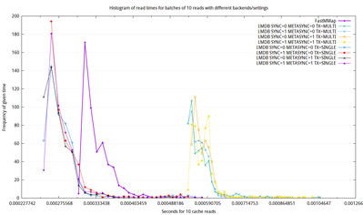

Performance of CHI::Driver::LMDB
CHI::Driver::LMDB has a few design decisions and some performance tweaks that can
be applied and give a variety of performance results.
Transaction Multiplicity
One design decision I had to make with how CHI binding works is how it plays
in to transactions. Especially as there's no way to work with a LMDB database
outside a transaction. ( At least, as far as I am aware )
Also, I encountered technical problems I haven't yet been able iron out or even explain
when I attempted to just make everything in a single transaction by default, which amounted
to Perl attempting to destroy database components prior to closing the transaction,
in the middle of global destruction, causing a SEGV.
Obviously that is not hugely desirable.
This quirk can be avoided by manually cleaning up the CHI object
at any time prior to GlobalDestruction, simply by:
undef $chior simply letting the object fall out of a lexical scope.
But obviously that risk is large, and the performance penalty of doing the safer alternative, (putting all writes in their own transactions) has to be a considered tradeoff.
FSYNC modes
LMDB has two tunable options with regards to how it calls fsync
on the filesystem.
fsyncing has a reasonable IO cost, and is usually defaulted
to enabled, because consitency and integrity are high priority for LMDB
However, for a cache backend, it is understandable you may not care if your data vaporises if your computer crashes and loses something
MDB_NOSYNC- Regulates whetherLMDBcallsfsyncaftercommitat the end of a transactionMDB_NOMETASYNC- Regulates whetherLMDBcallsfsyncon themetapageaftercommitat the end of a transaction
How they play together
You may have notcied how the FSYNC settings talk much about "at end of transaction". Due to this,
this means if you've opted for multiple transactions, those fsync calls are going to wear you down.
The data
All of the following images click through to larger forms of themselves.
Write Performance
Here we have 3 groups of Write Performance.

On the far right, we have the two slowest modes, both suffering under the penalty of having a transaction per entry:
- Slowest - One Transaction Per Cache Store,
fsyncingdataandmetadata - Second Slowest - One Transaction Per Cache Store,
fsyncing onlydata
Its too bad, but at 10x the time of CHI::Driver::FastMmap, it can certainly be better.
{kind=link}
Next slowest group is again limited mostly by transaction overheads. But at only 1.75x FastMmap,
it serves as a respectable compromise between speed and ease of use.
{kind=link}
The fastest options are of course, by far, to use single transactions.
All of the variations I tested of fsync settings in conjunction with single transactions
appeared to be as fast as each other. This is of course, due to fsync not really firiing
till after the end of the transaction
Still, its impressive LMDB proves faster than CHI's FastMmap driver.
Surprising, because I suspect LMDB to be implemented in terms of Mmap at some level,
so it really speaks for its efficiency, .... or suggest there's a performance defect that could be improved in CHI::Driver::FastMmap
{kind=link}
Read Performance
There are only 2 main groups of performances for reads.
{kind=link}
The most notably slower group is simply due to transaction overheads.
Any fsyncsettings seem to have no impact on read rates.
This is not too bad at ony 2x FastMmap
{kind=link}
And with only single transactions, read performance, regardless of fsync settings,
read performance is again, an impressive ~ 0.75x that of the FastMmap driver.
{kind=link}
The Benchmarks
The code for generating these benchmark images is stored Here. Raw CSV data generated locally is found in theresults/* sub directories.